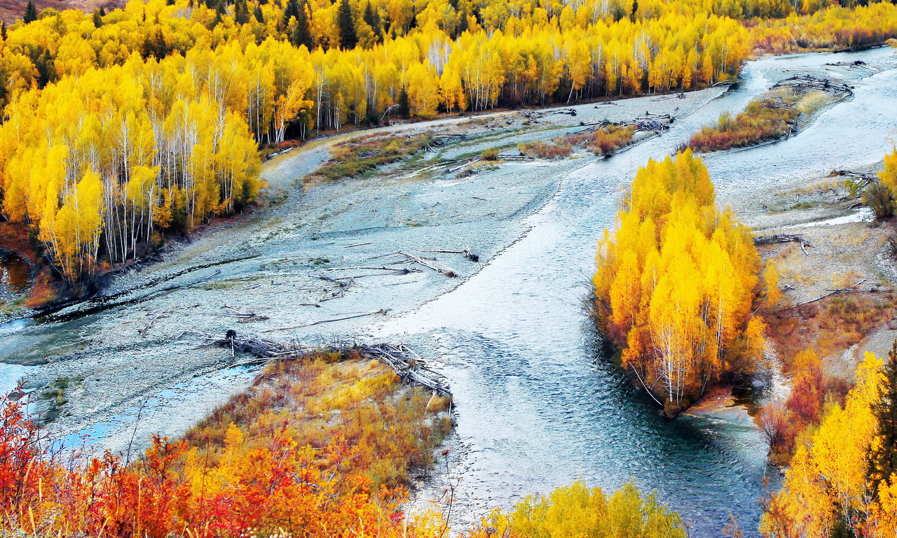

新疆维吾尔自治区，简称“新”，首府乌鲁木齐市，位于中国西北边陲，是中国五个少数民族自治区之一。面积163.1585万平方公里， 是中国陆地面积最大的省级行政区，占中国国土总面积六分之一。常住人口2444.67万人（2017年末）。
新疆地处亚欧大陆腹地，陆地边境线5600多公里，周边与俄罗斯、哈萨克斯坦、吉尔吉斯斯坦、塔吉克斯坦、巴基斯坦、蒙古、印度、阿富汗斯坦八国接壤，在历史上是古丝绸之路的重要通道，现在是第二座“亚欧大陆桥”的必经之地，战略位置十分重要。新疆现有47个民族成分，主要居住有汉、维吾尔、哈萨克、回、蒙古、柯尔克孜、锡伯、塔吉克、乌孜别克、满、达斡尔、塔塔尔、俄罗斯等民族，是中国五个少数民族自治区之一。全国第六次人口普查结果中，24省市区受高等教育人口比例新疆位列第五。新疆将全面落实南疆地区14年免费教育政策，推进其他地区14年免费教育，逐步实现全区15年免费教育，即学前3年、小学6年、初中3年、高中3年。
新疆古称西域，西域一词特指新疆地域范围从古代一直延续至清朝中期乾隆帝统治时期。新疆这个名称，有另外一层意思。继公元1878年左宗棠自阿古柏手中收复了新疆之后，1882年沙俄侵略者也被迫归还了伊犁地区。于是，左宗棠力主在天山南北建省。他在给清朝皇帝的奏折中称新疆是“他族逼处，故土新归”。于是以新疆为省名就有了一层新的意义。即新疆自古是中国固有的领土，但因为是新从阿古柏和沙俄手中收复的失地，故以新疆定为省名，有“故土新归”之意。1884年新疆建省，正式定名新疆省。从口头传统上已经成为特指西域地区名词“新疆”一词正式成为特指中国西域地区的专用名词，沿用至今。
截至2017年底，新疆维吾尔自治区辖4个地级市、5个地区、5个自治州共14个地级行政单位，13个市辖区、24个县级市、62个县、6个自治县共105个县级行政单位，1个县辖区、349个镇、481个乡、42个民族乡、193个街道共1066个乡级行政单位。
新疆远离海洋，深居内陆，四周有高山阻隔，海洋气流不易到达，形成明显的温带大陆性气候。气温温差较大，日照时间充足（年日照时间达2500～3500小时），降水量少，气候干燥。新疆年平均降水量为150毫米左右，但各地降水量相差很大，南疆的气温高于北疆，北疆的降水量高于南疆。最冷月（1月），平均气温在准噶尔盆地为零下20℃以下，该盆地北缘的富蕴县绝对最低气温曾达到零下50.15℃，是全国最冷的地区之一。最热月（7月），在号称“火洲”的吐鲁番平均气温为33℃以上，绝对最高气温曾达至49.6℃，居全国之冠。由于新疆大部分地区春夏和秋冬之交日温差极大，故历来有“早穿皮袄午穿纱，围着火炉吃西瓜”之说。
新疆